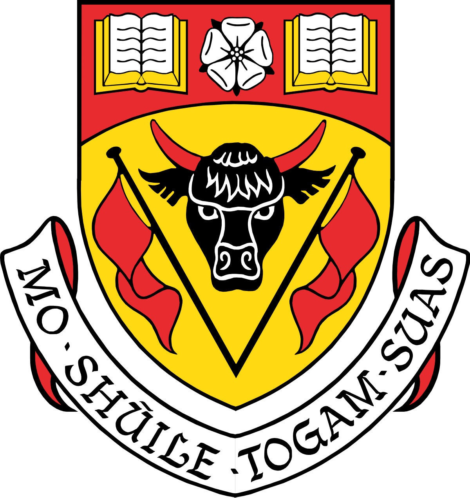

Experience
I have a wide array of skills that I've developed during my time as a teacher and as a business leader.
I specialize in communication and connectivity, and I have a mindset for bringing people and
resources together more efficiently. Below are the key skills that I possess, as well as the relative
strength of, or length of time spent developing that skill.
-
3 years Front-end Development
-
Strong Written Communication
-
10 years Spreadsheet Technologies
-
School Office 365 Applications
-
Lifetime French Bilingualism
My last job was working with a company called Global Knowledge,
a Skillsoft Company, which I started in 2016. I was first employed as a technical
trainer, and I primarily taught Microsoft Office applications to claiments with the
Workers Compensation Board of Alberta, who were being re-trained for work in an office
setting. Then, during a corporate buy-out, I moved into managment for the facility,
and I served as both the technical specialist and the operations manager in this regard.
As the technical specialist, I was responsible for overseeing the hardware and software
within the facility, as well as preparing classrooms for specific courses, either by
installing the necessary software, or by building and connecting virtual machines to
run courses. As the operations manager, I would oversee the cleanliness of the facility,
as well as manage the course delivery schedules and the course catering orders. If any
issues arose, such as a complaint, or a facility management issue, then it was also my
responsibility to handle it.
At the onset of the pandemic, I was able to convert one of our primary course offerings
into an online offering, so that we could continue to operate into the pandemic, despite
the lockdown measures. I was directly responsible for overseeing the entire transition
and delivery of this course from an operations standpoint, and also served as the lead
technical specialist for the first eight months of the lockdowns. To facilitate the
transition, I built and managed an Excel workbook within our Office 365 cloud environment
to keep track of every aspect of our new course delivery, since none of our existing systems
were prepared to handle such a switch, and no one could predict the extent or duration of
the lockdowns. As a result of the measures I put into place, throughout the pandemic,
the team never lost track of a single hardware or software component, and I'm told that
the course delivery transition led to approximately $900,000 in revenue during one of the
pandemic's early fiscal quarters.
Education
Education is essential to a healthy, successful life. I have three degrees from various institutions
across Canada, as well as a variety of certificates from my time as a public educator. My most recent
venture was a bit more technical, however, completing a course on Front-end Web Development with
Lighthouse Labs in late 2021. A brief description of some of my academic adventures can be found below.
-

Lighthouse Labs
Took a course from Lighthouse Labs on Front-end Web Development to keep working towards my goal of
becoming a full stack developer. The course solidfied my skills in HTML5, CSS3, and JavaScript, taught
some design tips, and moved me into learning jQuery and connecting web APIs to my applications.
-

University of Calgary
Earned a Master of Education degree at the University of Calgary, specializing in 'Teaching and
Learning Languages' and 'Designing Technology-Rich, Collaborative Learning Environments'. Wrote a
thesis on the nature and purpose of digital literacy, and why it should be considered essential.
-

Nipissing University
Earned a Bachelor of Education degree from Nipissing University, specializing in kindergarten,
primary, and junior education. Shortly afterwards, completed a French language proficiency test with
the Elementary Teacher's Federation of Ontario and received a perfect score in both test sections.
-
Carleton University
Earned a Bachelor of Arts honours from Carleton University as my undergraduate degree, specializing
in English literature and World histories. This was a brutal, grinding degree that involved significant
reading and writing skills to accomplish. I consider myself an expert in both for having done so.